Im vierten Semester dreht sich alles um die Entwicklung großer, verteilter
Anwendungen mit Java und der Jakarta Enterprise Edition. Neben einer guten
Entwicklungsumgebung benötigen wir daher auch verschiedene Server und
Testwerkzeuge. Insgesamt benötigen wir folgende Programme:
Git
Java Development Kit
Apache NetBeans
Apache Maven
Apache TomEE
Apache Derby
SoapUI
Die Programme haben dabei folgende Funktion:
Git
Wie es sich gehört werden wir auch dieses Semester wieder in Gruppen arbeiten,
um gemeinsame Projekte zu bearbeiten. Git dient uns dabei als Versionsverwaltung,
die einerseits alle Änderungen am Code nachvollziehbar macht und andererseits
dabei hilft, den Code innerhalb eines Teams zu teilen.
Java Development Kit
Für die Programmierung werden wir dieses Semester voll auf Java setzen. Du
benötigst daher eine aktuelle Version des Java Development Kit als Compiler
und Laufzeitumgebung.
Apache NetBeans
Wie bei den meisten anderen Programmiersprachen reicht im Grunde genommen ein
einfacher Texteditor bereits aus, um Java-Quellcodes zu schreiben und zu bearbeiten.
Üblicherweise würde man aber trotzdem eine vollwertige Entwicklungsumgebung nutzen.
In der Vorlesung nutzen wir hierfür NetBeans, da es leichter zu bedienen als die
anderen ist und im Hintergrund Standardwerkzeuge wie Ant und Maven anstelle
proprietärer Lösungen nutzt.
Apache Maven
Maven ist in der NetBeans-Installation bereits enthalten, kann aber auch als eigenständiges
Programm installiert werden. Es vereinfacht nicht nur die Kompilierung, sondern greift im
Hintergrund auch auf ein großes Repository an Java-Bibliotheken zu, die wir in unseren
Anwendungen verwenden können.
Apache TomEE
Serverseitig nutzen die meisten Java-Anwendungen einen so genannten Applikationsserver
als Laufzeitumgebung. Denn als Bestandteil der Jakarta Enterprise Edition bietet er
die gesamte technische Infrastruktur, die wir zur Entwicklung benötigen, so dass wir
uns nur um die fachliche Anwendungslogik kümmern müssen. In der Vorlesung nutzen wir
den TomEE von Apache, da dieser mit weniger Ressourcen auskommt und erfahrungsgemäß
auch stabiler läuft, als andere Server.
Apache Derby
Kaum eine verteilte Anwendung kommt ohne eine Datenbank zur Speicherung und Verwaltung
ihrer Daten aus, wobei hier meistens klassische SQL-Datenbanken zum Einsatz kommen.
Kein Wunder also, dass Jakarta auch hier entsprechende Klassen definiert. Die meisten
Datenbanken sind dabei mit Java kompatibel, wir nutzen aber Apache Derby, da sie
nur wenig Speicher belegt und ohne großartige Installation auskommt.
SoapUI
Im Rahmen der Vorlesung werden wir auch SOAP- und REST-Webservices programmieren,
die häufig zur Kommunikation in verteilten Anwendungen genutzt werden. Dabei werden
wir natürlich nicht umhin kommen, diese Services auch zu testen, was mit SoapUI
besonders einfach von der Hand geht.
1)
Besuche die Webseite https://jdk.java.net
und lade die passende Version für dein Betriebssystem herunter.
Download des Java Development Kit
2)
Unter Windows heißt die ZIP-Datei openjdk-11.0.2_windows-x64_bin.zip,
wobei 11.0.2 die Versionsnummer ist und daher bei dir abweichen kann.
Entpacke die Datei in das Softwareverzeichnis für unsere Vorlesung.
Entpacken des Java Development Kit
3)
Öffne das neue Verzeichnis und kopiere den Pfad in die Zwischenablage. Achte dabei darauf,
dass es sich um das Verzeichnis handelt, indem sich die Unterverzeichnisse bin,
conf, include usw. befinden.
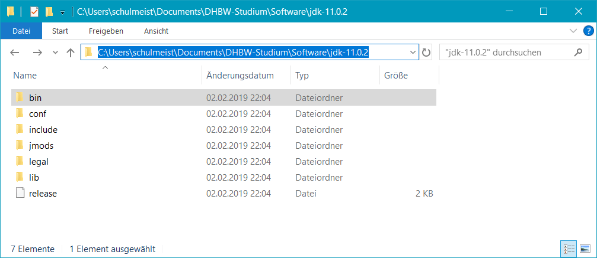
Kopieren des Pfads, in dem sich das Java Development Kit befindet
4)
Öffne das Startmenü und suche dort nach dem Begriff „Umgebungsvariablen”. In der Suche sollte
daraufhin der Menüpunkt Umgebungsvariablen für dieses Konto bearbeiten
erscheinen. Klicke ihn an.
Öffnen des Konfigurationsfensters für Umgebungsvariablen
5)
Klicke im oberen Bereich des Fensters auf Neu…, um eine neue Variable
mit dem Namen JAVA_HOME anzulegen. Der Wert der Variable muss dem eben
kopierten Pfad entsprechen.
Anlage einer neuen Umgebungsvariable namens JAVA_HOME
6)
Anschließend bearbeite die Umgebungsvariable Path und füge dort denselben
Pfad gefolgt von \bin ein.
Bearbeiten der Umgebungsvariable Path
7)
Zum Testen der Installation benötigen wir wieder eine Kommandozeile. Öffne deshalb das Startmenü
und gebe dort den Befehl cmd ein.
Start der Kommandozeile unter Windows
Gib dann den Befehl javac -version ein und bestätige ihn mit ENTER.
Wenn alles gut geht, sollte die installierte Java-Version erscheinen.
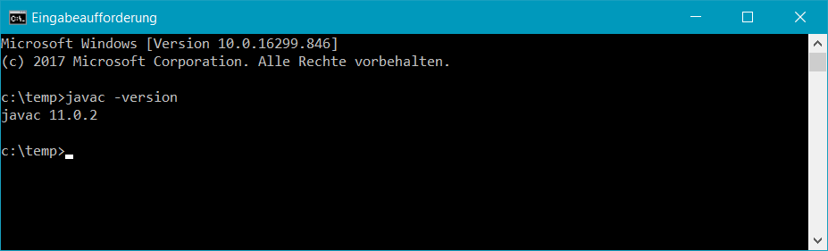
Versionsanzeige des Java-Compilers
1)
Besuche die Webseite https://netbeans.apache.org
und lade das Binärpaket (nicht die Quellcode-Version) herunter.
Download von NetBeans
2)
Das ZIP-Archiv heißt incubating-netbeans-java-10.0-bin.zip,
wobei 10.0 die Versionsnummer ist und daher bei dir abweichen kann.
Entpacke die Datei in das Softwareverzeichnis für unsere Vorlesung.
Entpacken von NetBeans
3)
Wechsle in das Unterverzeichnis netbeans\bin und versuche, NetBeans
per Doppelklick auf netbeans64.exe zu starten. Unter macOS und Linux
musst du stattdessen die Datei netbeans ohne eigene Dateiendung ausführen.
EXE-Datei zum Starten von NetBeans unter Windows
4)
Falls nach einer kurzen Weile die folgende Warnung erscheint, klicke auf
Disable Modules and Continue.
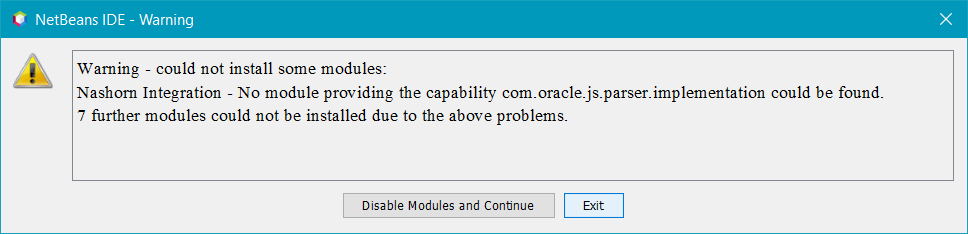
Warnung wegen einem fehlenden Modul
5)
Wenn du willst, kannst du beim ersten Start der Sendung anonymisierter Nutzungsdaten zur
Verbesserung von NetBeans zustimmen.
Frage nach der Zustimmung zur Auswertung anonymisierter Nutzungsdaten
6)
Links sollten drei Tabreiter namens Projects, Files
und Services erscheinen. Falls nicht, öffne Sie über das Window-Menü.
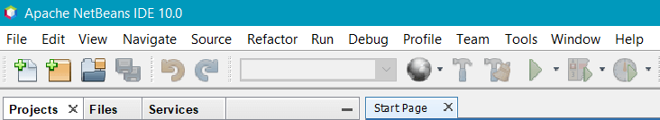
Mit den drei Tabreitern Projects, Files
und Services werden wir häufig arbeiten
7)
Dieser Schritt entfällt ab NetBeans 11 und wird nur für NetBeans 9 oder 10 benötigt. In diesen Versionen bietet NetBeans
zwar schon viele Funktion. Es fehlen allerdings noch die Erweiterungen für Jakarta EE, die wir erst in Form weiterer Plugins
nachinstallieren müssen. Wähle hierfür den Menüeintrag Tools → Plugins aus,
wechsele dort auf den Reiter Settings und setze das fehlende Häkchen bei
NetBeans 8.2 Plugin Portal.
Aktivierung des zusätzlichen Plugin-Repositories für Jakarta EE
Anschließend wechsle auf den Reiter Available Plugins und klicke dort auf
Check for Newest, um die Liste der verfügbaren Plugins zu aktualisieren.
Danach installiere die folgenden Plugins:
SOAP Web Services
EJB and EAR
RESTful Web Services
Java EE Base
Oracle JS Parser Implementation
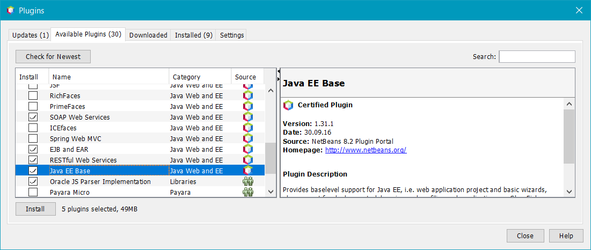
Auswahl der zu installierenden Plugins
Eine kurze Weile später will NetBeans dann neugestartet werden. Bestätige die Frage und warte,
bis NetBeans wieder verfügbar ist.
8)
Die Rechtschreibprüfung von NetBeans kennt leider nur Englisch, die Beispiele und Aufgaben in
Moodle sind aber alle auf deutsch kommentiert. Auf Moodle haben wir deshalb ein deutsches Wörterbuch
hochgeladen, dass du herunterladen kannst.
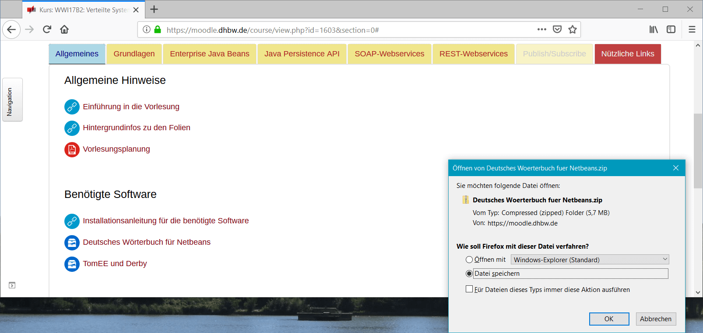
Download des deutschen Wörterbuchs
9)
Entpacke das ZIP-Archiv in das Softwareverzeichnis für unsere Vorlesung.
Entpacken des deutschen Wörterbuchs
10)
Wähle in NetBeans den Menüeintrag Tools → Options
aus und wechsle dort auf die Seite Editor → Spellchecker.
Klicke dort auf Add…, um ein neues Wörterbuch hinzuzufügen. Gib dabei folgende
Werte ein:
Dictionary File:german.dic aus dem eben entpackten ZIP-Archiv
Dictionary Locale:de
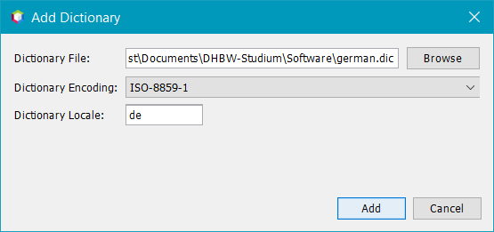
Hinzufügen des deutschen Wörterbuchs
11)
Zum Schluss wollen wir noch sichergehen, dass du maven-basierte Webprojekte in NetBeans erstellen kannst.
Wähle hierfür im Menü den Eintrag Tools → Options aus
und öffne dann die Seite Java → Maven. Es dauert dann
eine Weile, bis sich das Fenster kurz schließt und wieder öffnet und dadurch Maven aktiviert wurde.
Du kannst das Fenster danach gleich mit OK wieder schließen.
7
Zum Test, ob Maven nun vollständig eingerichtet wurde, gehe auf File → New Project…
und prüfe, ob in der Kategorie Maven der Eintrag Web Application erscheint.
Eventuell taucht der Eintrag dabei nicht von Anfang an auf, nach einer Weile sollte er aber irgendwann hier zur Verfügung stehen.
Wenn es so aussieht, ist alles in Ordnung.
1)
Auf Moodle haben wir eine vorkonfigurierte Version von Apache TomEE und Apache Derby zur Verfügung gestellt.
Lade das ZIP-Archiv auf deinen Rechner runter.
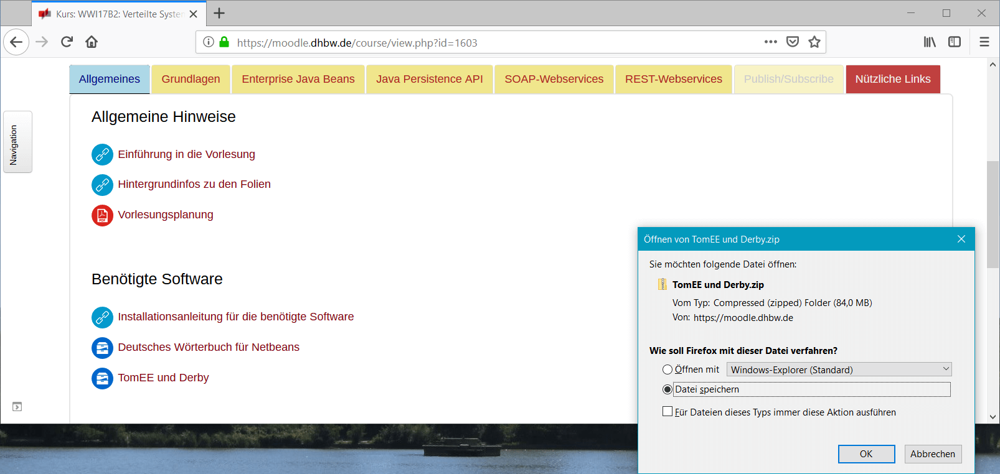
Download von TomEE und Derby
2)
Das ZIP-Archiv heißt schlicht TomEE und Derby.zip. Entpacke es in das Softwareverzeichnis für
unsere Vorlesung. Dabei sollten die drei Verzeichnisse apache-tomee-plume-8.0.0-M1,
db-derby-10.14.2.0-bin und Datenbankinhalt entstehen.
Die exakten Versionsnummern können natürlich abweichen.
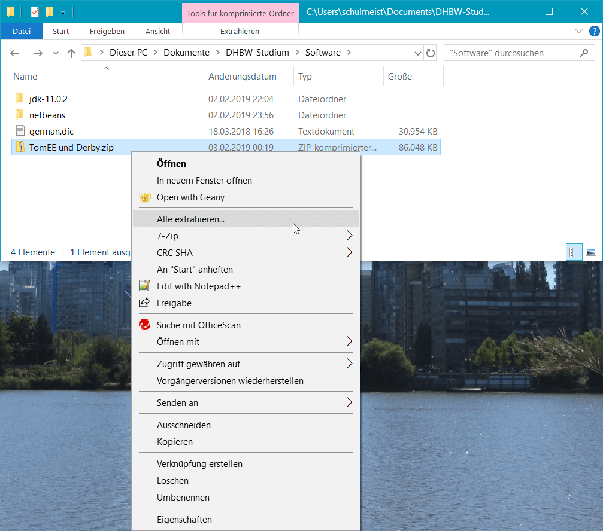
Entpacken von TomEE und Derby
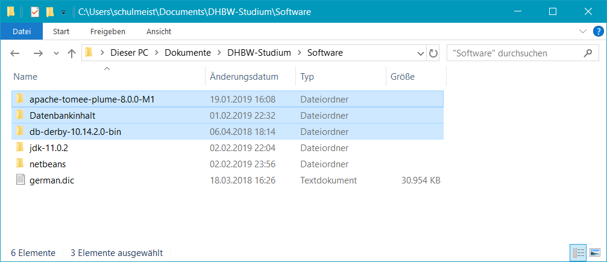
So sollte das Ergebnis aussehen
3)
Zunächst wollen wir die Datenbank einrichten. Wechsle daher in NetBeans auf den Reiter Services und
öffne dort das per Rechtsklick Kontextmenü zum Eintrag Databases → Java DB.
Innerhalb des Menüs gehe dann auf Properties….
Öffnen der Derby-Konfiguration in NetBeans
4)
Wähle folgende, eben entpackte Verzeichnisse in dem Fenster aus und bestätige diese mit OK.
Java DB Installation:db-derby-10.14.2.0-bin
Database Location:Datenbankinhalt
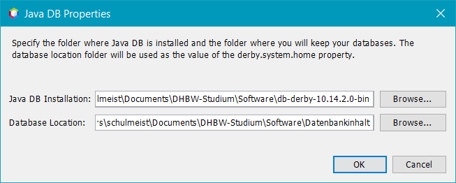
Konfiguration der Datenbankverzeichnisse in NetBeans
5)
Durch die eben vorgenommene Konfiguration sollte ein neuer Eintrag namens jdbc:derby://localhost:1527/sample
im Ordner Databases erscheinen. Klicke ihn mit der rechten Maustaste an und gehe dann auf Connect…,
um die Datenbank zu starten. Daraufhin sollten innerhalb des Ordners weitere Einträge mit den Schemas und Tabellen der Datenbank auftauchen.
Diesen Schritt musst du nun immer ausführen, wenn du eine Datenbankanwendung mit NetBeans entwickeln willst.
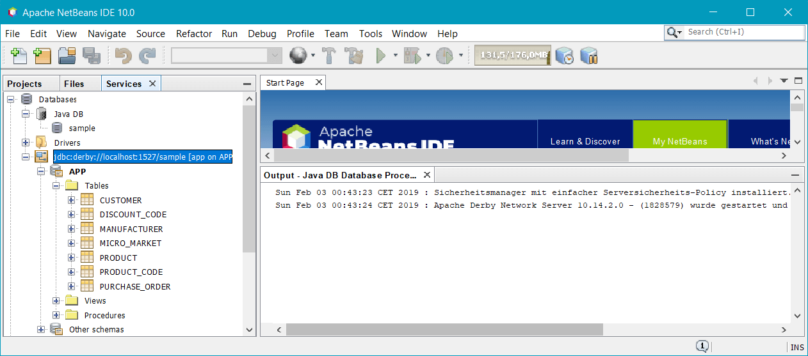
Alles in Ordnung, die Datenbank läuft
6)
Weiter geht es mit dem Applikationsserver. Öffne hierfür weiterhin im Reiter Services das Kontextmenü zum
Eintrag Servers und gehe dort auf Add Server…. Im darauf folgenden Fenster wähle
den Eintrag Apache Tomcat or TomEE aus und klicke auf Next.
Hinzufügen eines Tomcat- oder TomEE-Servers zu NetBeans
7)
Gib im nächsten Schritt nun folgende Werte ein und schließe das Fenster dann mit Finish.
Benutzername und Passwort kannst du frei wählen. Der Einfachheit halber nehmen wir hier admin
und admin, die bereits in der TomEE-Konfiguration hinterlegt sind.
Server Location:apache-tomee-plume-8.0.0-M1
Username:admin
Password:admin
Installationspfad und Zugangsdaten des TomEE-Servers
8)
Falls der neue Server nicht nach wenigen Sekunden im Ordner Servers zu sehen ist,
wähle den Menüpunkt Tools → Options aus und setze dort
den Radiobutton bei No Proxy. Anschließend musst du NetBeans neustarten.
Falls der neue Server in NetBeans nicht sichtbar ist, muss ggf. der Netzwerkproxy deaktiviert werden
Anschließend müsste der Server angezeigt werden und sich über das Kontextmenü starten lassen.
Wenn diese Meldung erscheint, wurde der TomEE-Server erfolgreich gestartet.
1)
Besuche die Webseite https://www.soapui.org/ und lade die
Open-Source-Version von SoapUI herunter. Diese ist auf der Webseite leider etwas versteckt, da der Hersteller
einem lieber die kostenpflichtige Pro-Version andrehen will …
Download von SoapUI
2)
Unter Windows heißt die Installationsdatei SoapUI-x32-5.4.0.exe,
wobei 5.4.0 die Versionsnummer ist und daher bei dir abweichen
kann. Starte die Datei, um die Installation zu beginnen.
Installation von SoapUI
Unter Linux handelt es sich stattdessen einfach um eine ZIP-Datei, die du in unser Softwareverzeichnis
extrahieren kannst. Der Start der Anwendung erfolgt hier mit der Datei bin/soapui.sh.
Start von SoapUI unter Linux
3)
Bei der Auswahl der zu installierenden Komponenten kannst du alles abwählen. Wir benötigen kein HermesJMS
und auch keine Tutorials für SoapUI. Danach kannst du die Installation durchlaufen lassen.
Abwählen aller Zusatzkomponenten bei der Installation von SoapUI